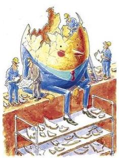
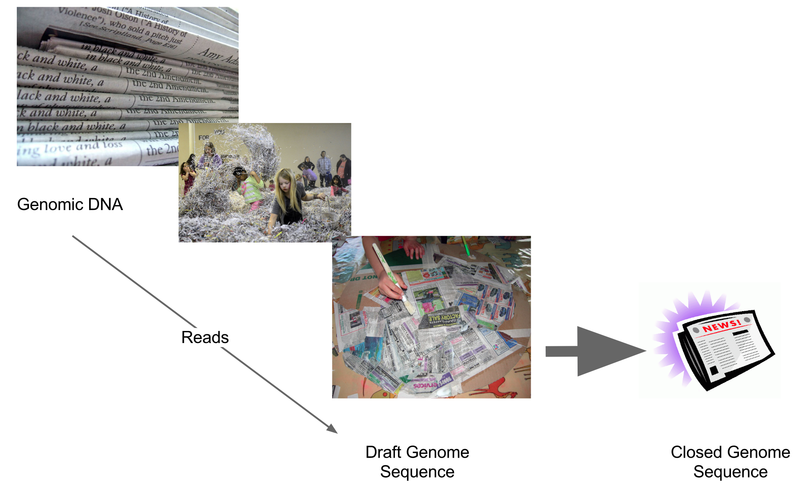
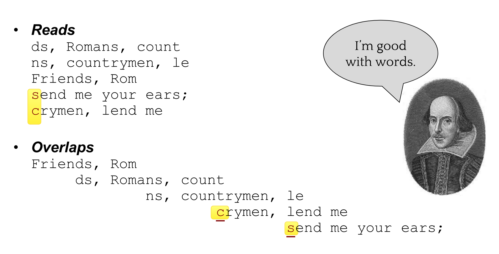
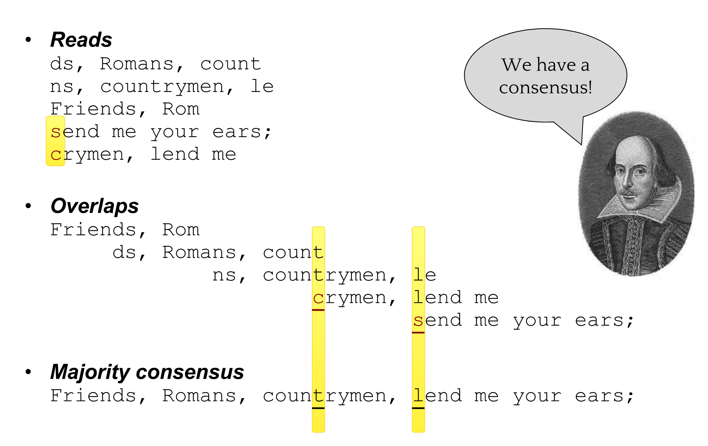
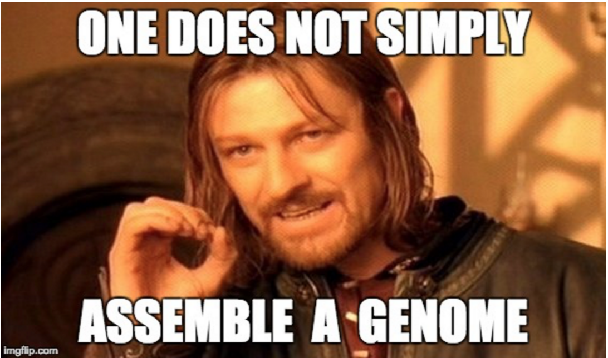
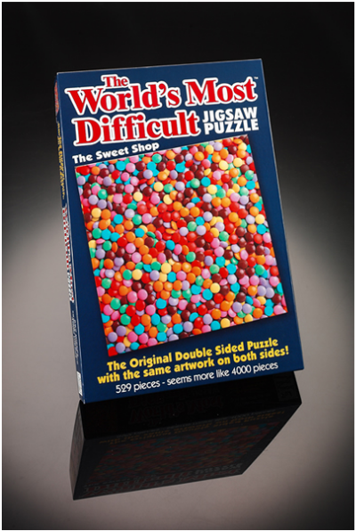
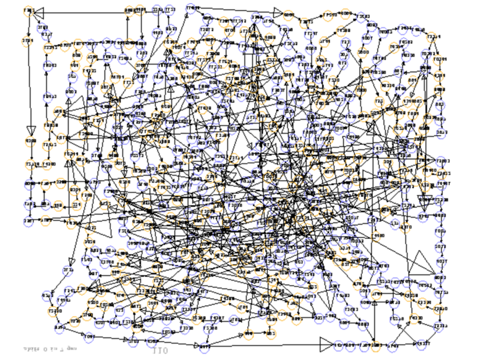
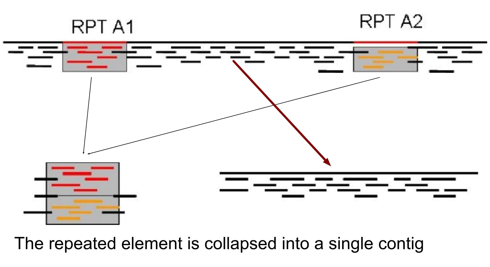
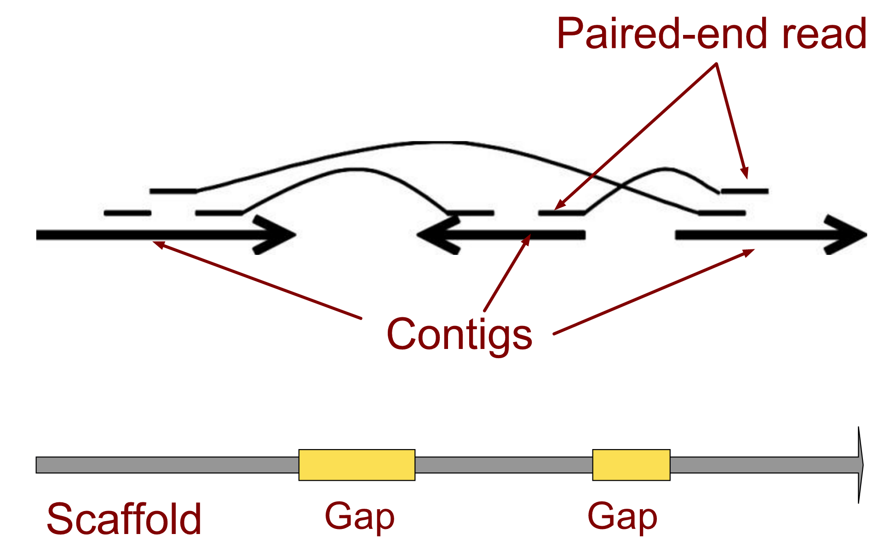

An Introduction to Genome Assembly
Contributors
Questions
How do we perform a very basic genome assembly from short read data?
Objectives
assemble some paired end reads using Velvet
examine the output of the assembly.
.enlarge120[
De novo Genome Assembly
]
With thanks to T Seemann, D Bulach, I Cooke and Simon Gladman
.enlarge120[
De novo assembly
]
.pull-left[
The process of reconstructing the original DNA sequence from the fragment reads alone.
-
Instinctively like a jigsaw puzzle
- Find reads which “fit together” (overlap)
- Could be missing pieces (sequencing bias)
- Some pieces will be dirty (sequencing errors)
]
.pull-right[  ]
Another View

Assembly: An Example
A small “genome”
Shakespearomics

Shakespearomics

Shakespearomics

So far, so good!
The Awful Truth

“Genome assembly is impossible.” - A/Prof. Mihai Pop
.enlarge120[
Why is it so hard?
]
.pull-left[
- Millions of pieces
- Much, much shorter than the genome
- Lots of them look similar
- Missing pieces
- Some parts can’t be sequenced easily
- Dirty Pieces
- Lots of errors in reads ]
.pull-right[  ]
Assembly recipe
- Find all overlaps between reads
- Hmm, sounds like a lot of work..
- Build a graph
- A picture of the read connections
- Simplify the graph
- Sequencing errors will mess it up a lot
- Traverse the graph
- Trace a sensible path to produce a consensus
![Reads are provided to the algorithm, they are in the colours of the rainbow. Next overlaps are identified and the rainbow resolves itself. A subset of that is highlighted and points to reads connected by overlaps with many arrows going between the bluegreen fragments that are highlighted. This goes to the hamiltonian path identified with a re-run arrow between, indicating some mount of backtracking needed to find the best path. Finally the hamiltonian produces a consensus sequence with the correct final ordering.](../../images/olc_pic.png)
A more realistic graph

.image-15[] What ruins the graph?
- Read errors
- Introduces false edges and nodes
- Non haploid organisms
- Heterozygosity causes lots of detours
- Repeats
- If they are longer than the read length
- Causes nodes to be shared, locality confusion.
Repeats
.enlarge120[
What is a repeat?
]
.pull-left[
A segment of DNA which occurs more than once in the genome sequence
- Very common
- Transposons (self replicating genes)
- Satellites (repetitive adjacent patterns)
- Gene duplications (paralogs)
]
.pull-right[
]
Effect on Assembly

.enlarge120[
The law of repeats .image-15[]
]
It is impossible to resolve repeats of length S unless you have reads longer than S
It is impossible to resolve repeats of length S unless you have reads longer than S
Scaffolding
.enlarge120[
Beyond contigs
]
.pull-left[
Contig sizes are limited by:
- the length of the repeats in your genome
- Can’t change this
- the length (or “span”) of the reads
- Use long read technology
- Use tricks with other technology
]
.enlarge120[
Types of reads
]
.pull-left[.enlarge120[Example fragment]]
.remark-code[.enlarge120[atcgtatgatcttgagattctctcttcccttatagctgctata]]
.pull-left[.enlarge120[“Single-end” read]]
.remark-code[.enlarge120[atcgtatgatcttgagattctctcttcccttatagctgctata]]
sequence one end of the fragment
.pull-left[.enlarge120[“Paired-end” read]]
.remark-code[.enlarge120[atcgtatgatcttgagattctctcttcccttatagctgctata]]
sequence both ends of the same fragment
We can exploit this information!
.enlarge120[# Scaffolding]
- Paired end reads
- Known sequences at each end of fragment
- Roughly known fragment length
-
Most ends will occur in same contig
- Some will occur in different contigs
-
evidence that these contigs are linked
-
.enlarge120[# Contigs to Scaffolds]

.enlarge120[# Assessing assemblies]
- We desire
- Total length similar to genome size
- Fewer, larger contigs
- Correct contigs
- Metrics
- No generally useful measure. (No real prior information)
- Longest contigs, total base pairs in contigs, N50, …
.enlarge120[# The “N50”]
.enlarge120[The length of that contig from which 50% of the bases are in it and shorter contigs]
- Imagine we have 7 contigs with lengths:
- 1, 1, 3, 5, 8, 12, 20
- Total
- 1+1+3+5+8+12+20 = 50
- N50 is the “halfway sum” = 25
- 1+1+3+5+8+12 = 30 (>25) so N50 is 12
.enlarge120[# 2 levels of assembly]
- Draft assembly
- Will contain a number of non-linked scaffolds with gaps of unknown sequence
- Fairly easy to get to
- Closed (finished) assembly
- One sequence for each chromosome
- Takes a lot more work
- Small genomes are becoming easier with long read tech
- Large genomes are the province of big consortia (e.g. Human Genome Consortium)
.enlarge120[# How do I do it?] — .enlarge120[
Example
-
Culture your bacterium
-
Extract your genomic DNA
- Send it to your sequencing centre for Illumina sequencing
- 250bp paired end
- Get back 2 files
- .remark-code[MRSA_R1.fastq.gz]
- .remark-code[MRSA_R2.fastq.gz]
- Now what? ]
.enlarge120[# Assembly tools
- Genome
- Velvet, Velvet Optimizer, Spades, Abyss, MIRA, Newbler, SGA, AllPaths, Ray, SOAPdenovo, …
- Meta-genome
- Meta Velvet, SGA, custom scripts + above
- Transcriptome
- Trinity, Oases, Trans-abyss
And many, many others…
]
.enlarge120[
Assembly Exercise #1
- We will do a simple assembly using Velvet in Galaxy
- We can do a number of different assemblies and compare some assembly metrics.
]
Key Points
- We assembled some Illumina fastq reads into contigs using a short read assembler called Velvet
- We showed what effect one of the key assembly parameters, the k-mer size, has on the assembly
- It looks as though there are some exploitable patterns in the metric data vs the k-mer size.
Thank you!
This material is the result of a collaborative work. Thanks to the Galaxy Training Network and all the contributors! Tutorial Content is licensed under
Creative Commons Attribution 4.0 International License.
Tutorial Content is licensed under
Creative Commons Attribution 4.0 International License.